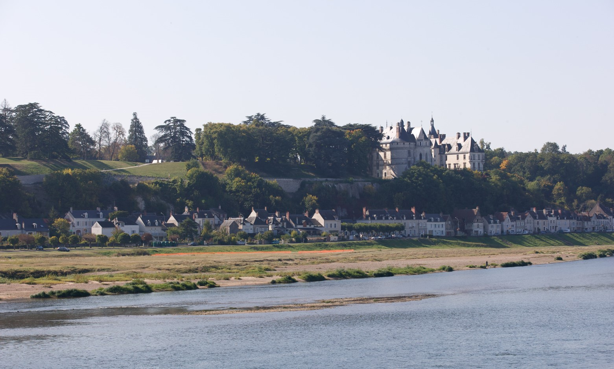

Survolez l'image et agrandissez/réduisez la vue à l'aide de la molette.
Budget: -
Surface: 551,60 m²
Date début: 2008
Date fin: 2008
Maîtrise d'ouvrage: Conservatoire International des Parcs et Jardins et Paysage
Co-traitant(s): Atelier Alexandre Chemetoff
Description:
Il y a une terrasse ouverte sur le paysage du Val de Loire et, en contrebas, le fleuve. Sur le banc de sable sont prélevés les matériaux qui sont mis en place sur la terrasse. Un rectangle de 93,50 x 5,8995 mètres s’appuie sur la ligne horizontale du parapet qui en détermine la mesure. Des indications sur la position de la parcelle, sur le cours du fleuve entre la source et l’embouchure y sont inscrites.
Le site d’apport domine son double dont la trace sur le sable au bord de la Loire reste visible. On ne peut accéder à la terrasse : depuis des gradins installés sur le talus qui la domine, on la voit en même temps que le paysage et le site d’emprunt surligné par l’orange vif d’un grillage. Un chemin taillé dans l’herbe haute de la prairie conduit jusqu’au point de vue. A la fin du festival des jardins, le sable est rapporté en Loire et tout recommence. La Loire est un fleuve sauvage. Emprunter à la nature le sable d’un banc découvert pour mettre en situation ce matériau dans un site différent puis rendre le matériau au site d’origine exprime le caractère passager et éphémère du jardin.
Bien qu’il utilise un élément durable, le geste du jardinier s’inscrit dans un temps instantané. A la fin le sable est restitué à la place qui lui a été réservée sur le banc, laissant une empreinte de la forme de la terrasse. La prochaine crue entraînera les grains plus loin vers l’embouchure. Un prochain jardin en tout point semblable n’emprunterait pas au fleuve le même sable et le banc n’occuperait pas nécessairement la même place dans le lit du fleuve. La carte est une représentation de la forme d’un territoire. Le jardin est une scarification de ce visage cartographique. La carte établit un rapport entre la taille réelle et la représentation. De la même manière, le jardin est une portion d’un territoire plus vaste dans lequel il s’inscrit et avec lequel il entretientun rapport d’échelle. Puisque nous sommes dans le jardin de la France, la terrasse est égale à un milliardième de la surface de la France métropolitaine, d’où le titre de ce jardin.
{kind=link}
{kind=link}
{kind=link}
{kind=link}